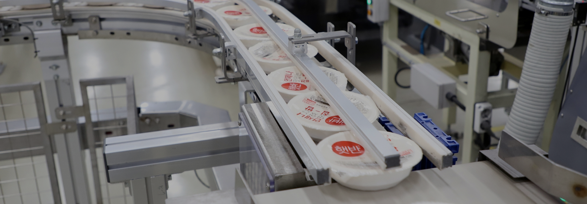

1996햇반이 처음 나온 해
1996년, 햇반이 처음 나온 날「ONLYONE 레시피북」을 타임캡슐에 묻었어요.
캡슐이 땅속에 잠든 동안비비고 같은 새 맛이 나왔어요.
그리고 2026년 오늘,30년 만에 캡슐을 엽니다.
1996
2006
2016
2026
오른쪽으로 끌어서 30년 건너오기
햇반 30주년 · 2026
ONLYONE
레시피를 찾아라
캡슐을 열었는데, 레시피북이 없어요.
CJ제일제당 온보딩
디자인 시안 D